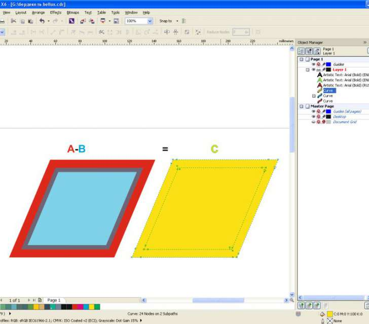

Старый добрый глюк с псевдозаливкой векторов
xromov / 20.03.2014, 19:10/19:48
Форум:
Версия программы:
16.0.0.707
Эта проблема была всегда сколько помню (начинал работать с версии Х3)
Может быть кто-то знает как с этим бороться?
На скриншоте из нижнего красного объета я вычитаю верхний голубой (для наглядности полупрозрачный), Получается желтый объект с внутренней псевдозаливкой, несмотря на то, что с внутренними границами все ок.

Ссылка на файл в кореле (12 версия)
У некоторых объектов заливка выходит за пределы объекта. Если "прорыв" происходит по внутренней границе объекта с дыркой, то дырка якобы заливается. На самом деле нет, но на мониторе и на печати все выглядит именно так. Если же заливка "переливается" через внешнюю границу, то возникает цветовая "грыжа" с новыми границами в виде кривой.
Режим заливки в CorelDRAW, или почему некоторые кривые имеют заливку в тех областях где должен быть просвет
Великолепно, макрос действительно помог. НО - этот объект я сделал в кореле, нарисовав и объединенив четыре стороны кривыми безье, то есть причина возникновения не только в импорте файлов.